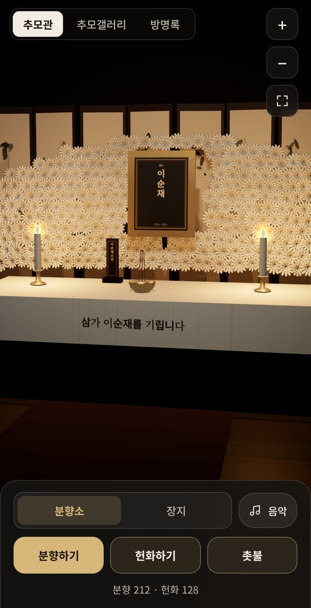
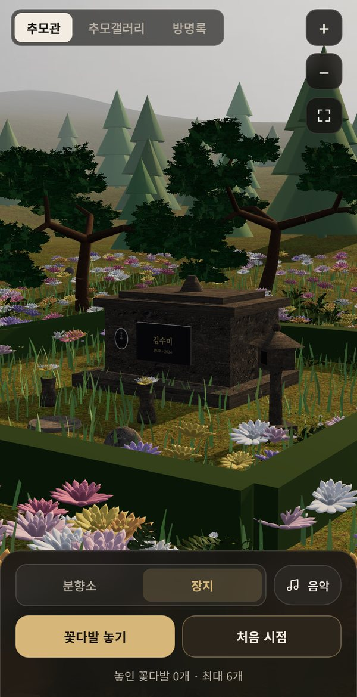
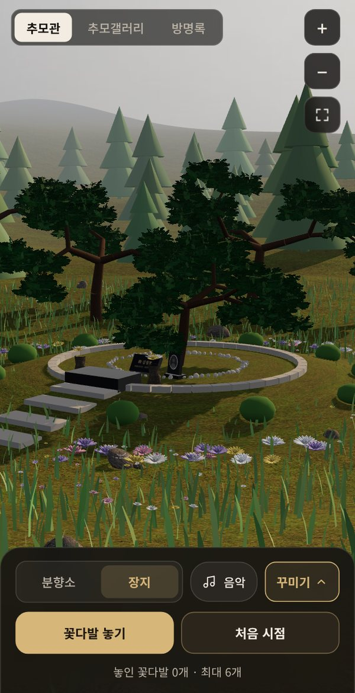
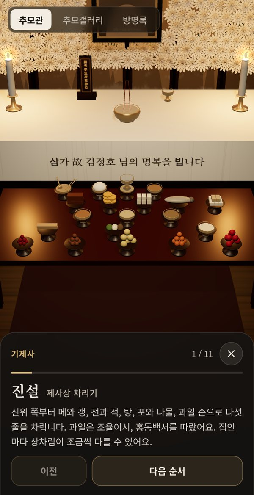
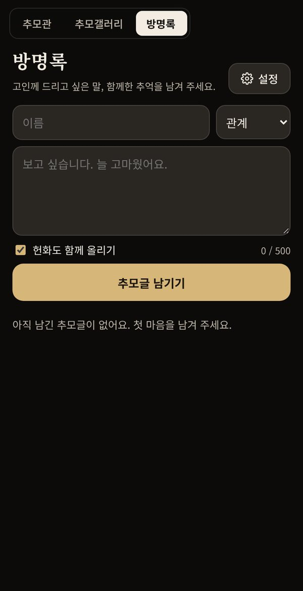
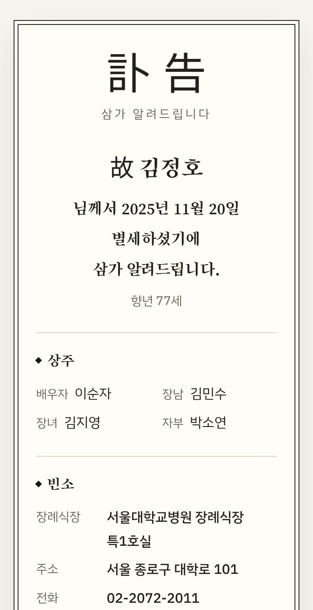

종교에 맞게 차려지는 3D 분향소
영정사진 둘레로 흰 국화 제단이 놓이고, 촛불과 향이 켜집니다. 손가락으로 돌려 보고 가까이 다가갈 수 있습니다.
- 향 피우기, 국화 올리기를 누구나 무료로
- 영정 액자는 검은 액자·금색 액자·원목 액자 중에서
- 국화 색과 제단의 풍성함을 가족이 고름

나라를 위해 목숨을 바친 분들을 공감 추모원이 직접 모신 공개 추모관입니다. 누구나 들어가 분향하고 국화를 올릴 수 있습니다. 장지는 기사로 확인된 실제 장례 방식과 모신 곳에 맞춰 꾸몄습니다.
공개 추모관에는 언론에 공개된 사실만 담습니다. 후손께서 원하지 않으시면 연락 주시는 즉시 내립니다. 새로 모실 분은 계속 더해 갑니다.
가입이나 결제 없이 바로 시작할 수 있습니다. 추모관을 늘리는 데에는 요금을 받지 않습니다.
성함, 생년월일, 기일과 종교를 적습니다. 음력 기일도 매년 양력 날짜로 바꿔 드립니다.
영정사진을 올리고 위치와 크기를 손가락으로 맞춥니다. 수목장, 봉분, 봉안묘 등 장지의 형식과 장소를 고릅니다.
기일 일주일 전, 전날, 당일에 알려 드리고, 알림을 누르면 그날의 제사 순서가 열립니다. 추모관 소식은 카카오톡으로 가족에게 전할 수 있습니다.
영정사진 둘레로 흰 국화 제단이 놓이고, 촛불과 향이 켜집니다. 손가락으로 돌려 보고 가까이 다가갈 수 있습니다.

수목장, 봉분 묘소, 자연장, 봉안묘, 가족묘, 왕릉형까지 열 가지 형식. 소나무 숲, 호숫가, 산사, 꽃동산 등 열 곳의 장소에 모십니다.


기제사, 불교 공양, 기독교 추도예배, 천주교 위령기도의 순서를 한 단계씩 안내합니다. 잔을 올리고 메에 숟가락을 꽂는 일은 화면이 하고, 절과 기도는 가족이 직접 올립니다.

바탕화면 위젯이 하늘나라에 가신 지 며칠째인지, 다음 기일까지 며칠 남았는지 알려 드립니다. 크기는 두 가지, 색은 어두운·밝은·투명 중에서 고릅니다.
가족이 가진 사진과 영상을 한곳에 모읍니다. 찾아온 분들은 이름과 관계를 남기고 국화와 함께 추모글을 올립니다. 방명록은 가족만 보게 닫아 둘 수도 있습니다.

카카오톡으로 받은 링크를 누르면 앱을 설치하지 않아도 온라인 추모관이 열립니다. 헌화하고 추모글을 남기고, 가족이 적은 생애 이야기를 읽습니다.

추모관을 만들 때 고른 종교에 맞춰 제단과 순서가 달라집니다.
영정과 흰 국화, 촛불과 향. 헌화와 묵념.
위패와 향로, 술잔과 제사상. 기제사 순서와 축문.
영가 위패, 연등과 연꽃, 목탁과 염주. 공양 순서.
십자가와 헌화. 추도예배 순서와 찬송가 오르간 반주.
십자고상과 촛불. 위령기도 순서.
부고장 보내기와 추모관 2곳 모시기는 무료예요. 사진·영상을 더 담고 고급 꾸미기를 모두 쓰시려면 멤버십(월 9,900원부터, 출시 기념 50% 할인)을 이용해 주세요.